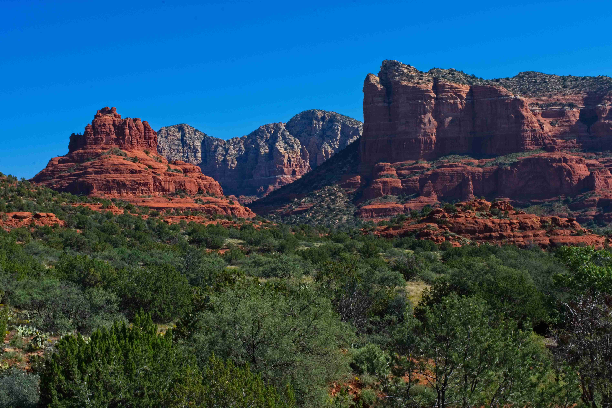

Janet and I took our third cruise, this time through the Mediterranean. We decided to try a different cruise line and settled on Oceania, based on a recommendation from one of Janet's friends. We supposedly started the cruise in Rome, but as it turns out Rome does not have a port for cruise ships. Their port is actually located about an hour north in Civitavecchia, Italy. We got there a couple of days early to settle in and get over our jet lag. There is not much happening in Civitavecchia so we ended up going south to Santa Marinella and north to Tarquinia. Tarquinia was well worth it, with its incredible archaeology. The cruise stopped in France (Saint Tropez), Spain (Barcelona, Seville and Cadiz), Morocco (Casablanca, Rabat and Agadir), back to Spain for the Canary Islands of Arracife, Tenerife and La Palma, to Portugal (Funchal aka Madeira) and finally ending in Lisbon, Portugal. We ended up staying another week in Portugal, visiting Pinhao, Porto and Lisbon where we flew back to San Francisco.
Janet and I decided to take another cruise. This time we cruised the country of Norway with Holland America since we were very satisfied with our Alaska cruise with them. We had a number of ports that we stopped at, each one further north as we progressed. We stopped at Stavanger, Flam, Alesund, Trondheim, Hammerfest, Honningsvag and then back down South to Geiranger and Bergen. Finally, we ended the cruise in Amsterdam (where we started) and traveled by train to Delft and Gouda. Lastly, we flew back to San Francisco from Amsterdam.

This was a trip to the Northwest of the USA. We flew from Sacramento, CA to Spokane, WA and stayed the first few days with Janet's brother Tim and his wife Nanne. We rented a car and drove to our first stop, Glacier National Park, MT. We came back to Spokane for a day and then drove to Anacortes, WA to catch the ferry over to Friday Harbor on San Juan Island. Leaving the San Juan Islands, we caught the ferry back to Anacortes and then drove to Bellingham, WA to spend a couple of days with Janet's niece Arianne and her husband Shane. Lastly, we flew back to Sacramento from Seattle, WA.

This was a trip to the Southwest of the USA. We flew from Sacramento, CA to Phoenix, AZ, where we rented a car. First stop was the Grand Canyon, AZ, then Mesa Verde, CO, Canyon de Chelly, AZ and finally stopping in Sedona, AZ.